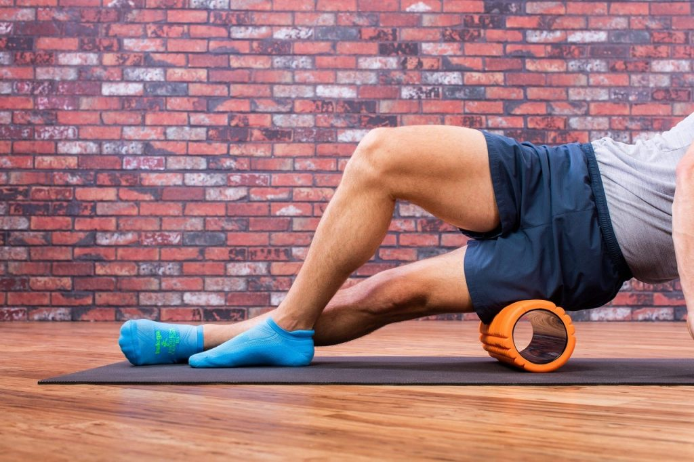
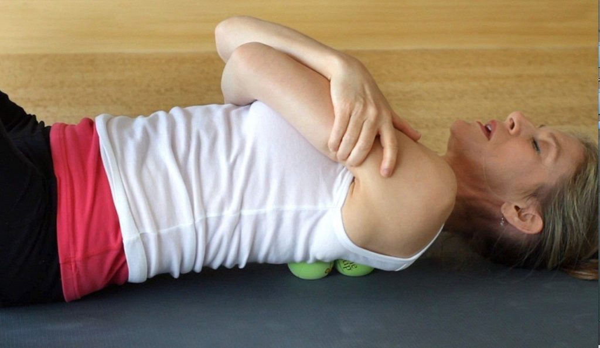

تمرینات اصلاحی چیست
از تمرینات اصلاحی برای درمان التهاب مفاصل به عنوان پیشگیری از آسیب، کنترل درد، پس از ترمیم یا حتی فقط برای استفاده در یک روند برای نگهداری اندام در وضعیت صحیح استفاده میشود. اهمیت تمرینات اصلاحی در داخل یک برنامه تمرینی ارتقا الگوی حرکت و افزایش انعطافپذیری در برابر آسیب است و در نهایت به ورزشکاران امکان میدهد تا به طور مداوم با شدتهای بیشتر تمرین کنند و حجم تمرینات را برای ارتقا ورزش مداوم افزایش دهند. بخش زیر شامل چند مورد از مؤثرترین تمرینات اصلاحی است که میتواند در هر برنامه سلامتی، تناسب اندام یا ورزشی برای کاهش درد مزمن و بهبود عملکرد گنجانده شود.
1. ماساژ با توپ گلف
یکی از رایجترین انحرافات اسکلتی – عضلانی که باعث درد مزمن میشود، استفاده بیش از حد از پا در تمرینات به خصوص تمرینات بدنسازی است. در این وضعیت کف پا صاف میشود و وزن به سمت خط وسط بدن چرخش میکند. استفاده بیش از حد از عضله باعث میشود بافت همبندی که در امتداد پا قرار دارد (فاسیای کف پا) تحریک شده و توانایی عملکرد صحیح خود را از دست بدهد. استفاده بیش از حد از روی عادت نادرست میتواند باعث شود سایر ساختارهای بدن مانند مچ پا، زانوها و رانها لقی ناشی از درست عمل نکردن پا را بگیرند. این میتواند منجر به استفاده بیش از حد، درد و عدم تعادل در آن قسمت از بدن شود.

چگونگی انجام تمرین: یک توپ گلف در زیر پای خود قرار دهید. آن را حداقل به مدت ۳۰ ثانیه تا ۱ دقیقه و هر بار روی نقاط مختلف به عقب و جلو بچرخانید. میتوانید تمرین را به صورت ایستاده انجام دهید و یا به جای توپ گلف با یک توپ تنیس انجام دهید. احتیاط: از فشار زیاد خودداری کنید، زیرا باعث آسیب به پا میشود. چهار عضله چهار سر ران در قسمت فوقانی پا وجود دارد و در اکثر تمرینات مربوط به بدنسازی درگیر هستند.
2. ماساژ عضلات چهار سر ران با فوم رولر

چگونگی انجام تمرین: فوم رولر را بین زمین و ران خود قرار دهید. مناطق دردناک را پیدا کنید و آن قسمت را برای چند ثانیه بر روی فوم رولر نگه دارید و وزن خود را بر روی آن بیندازید تا بافتها آزاد شوند. برای هر پا هر روز حدود ۱ دقیقه این کار را انجام دهید. با خم شدن زانوی پایی که روی رولر است، کشش اضافه کنید. به جای غلتک از توپ تنیس روی ران استفاده کنید. دراز بکشید و توپ را زیر عضلات ران قرار دهید. توپ را در امتداد ران حرکت دهید تا نقاط مختلف گرفتگی آزاد شود.
3. ماساژ ایلیوتیبیال با فوم رولر
ایلیوتیبیال باند (IT) گلوتئوس ماگزیموس را به پایین ساق متصل میکند. هنگامی که بدن به درستی کار میکند، این ساختارها برای کمک به کنترل پا هنگام چرخش عمل میکنند؛ اما استفاده بیش از حد باعث چرخش بیش از حد مچ پا و پایین پا به سمت خط میانی بدن میشود (که به نوبه خود باعث چرخش کل پا به سمت داخل میشود). از آنجا که ایلیوتیبیال باند به ساق پا متصل میشود، چرخش بیش از حد پا به سمت داخل میتواند منجر به تحریک و التهاب در ایلیوتیبیال باند شود. این ورزش میتواند باعث بازتوانی و بازسازی ایلیوتیبیال باند شود و فشار را از ناحیه پا، مچ پا، زانو، مفصل ران و کمر کاهش دهد.
چگونگی انجام این تمرین: فوم رولر را عمود بر کنار ران خود قرار داده و روی آن دراز بکشید. قسمتهای دردناک را پیدا کنید و وزن بدن خود را برای چند ثانیه بر روی آن نگه دارید تا گرفتگی بافتها آزاد شوند. هر پا را از کنار لگن به سمت پایین بچرخانید و تقریباً ۱-۲ دقیقه یک بار در روز انجام دهید. برای افزایش فشار، پاها را روی هم قرار دهید یا از فوم رولر سفتتری استفاده کنید. در صورت سخت بودن، تمرین را در حالت خوابیده به پهلو انجام دهید. احتیاط: روی مفصل زانو، فوم رولر را قرار ندهید.
4. تقویت عضلات گلوتئال (باسن)

در زندگی امروزه، مردم بیش از هر زمان دیگری که پشت میز بنشینند، به تماشای تلویزیون یا رانندگی ماشین میگذرانند. در نتیجه این سبک زندگی بی تحرک، عضلات گلوتئال را بی تحرک و بدون فعالیت میکند و میتواند باعث شود کاملاً ناکارآمد و ضعیف شوند. این تمرین به منظور ترمیم مجدد بافتهای عضلات گلوتئال جهت آماده سازی آنها برای پیشرفت در یک تمرین تقویت کننده طراحی شده است.
چگونگی انجام این تمرین: به پشت روی زمین دراز بکشید و زانوها را خم کنید. در هر نقطه دردناک که حس میکنید یک توپ بیس بال قرار دهید. توپ را به مدت ۱۰-۲۰ ثانیه و در مجموع حدود ۱-۲ دقیقه در روز، روی این نقاط ثابت نگه دارید. میتوانید مچ پایی را که ماساژ میدهید روی زانوی پای مخالف خود قرار دهید. همچنین میتوانید تمرین را به جای توپ بیس بال با توپ تنیس انجام دهید. احتیاط: برای جلوگیری از افزایش بیش از حد ستون فقرات کمر، زانوها را خم نگه دارید.
5. ماساژ قسمت فوقانی کمر با دو توپ تنیس
یکی از رایجترین انحرافات اسکلتی عضلانی که باعث درد مزمن میشود، کیفوز بیش از حد توراسیک (گرد شدن قسمت فوقانی پشت) است.
این امر معمولاً به دلیل طولانی مدت نشستن یا فشار مزمن ایجاد میشود. وقتی قسمت فوقانی پشت خیلی گرد شود، گردن، سر و شانهها از حالت صاف خارج میشوند و درد مزمن میتواند در هر یک از این نواحی یا در همه آنها ایجاد شود. علاوه بر این، در حالت ایستاده، باعث ایجاد فشار در قسمت تحتانی کمر میشود که ستون فقرات به حالت قوسدار تمایل دارد. این تمرین عضلات قسمت میانی و فوقانی کمر را تقویت و بازتوانی میکند و باعث قسمت ستون فقرات قفسه سینه نیز میشود.
چگونگی انجام این تمرین: دو توپ تنیس بردارید و آنها را در دو طرف ستون فقرات خود قرار دهید تقریباً از ارتفاع میانی تا بالای کمر. وقتی روی توپها دراز میکشید، زانوها را خم کرده و سر خود را روی یک بالش بگذارید. به تدریج لگن خود را چرخش داده و کمر را بر روی زمین نگه دارید. حدود ۲۰-۳۰ ثانیه روی نقاط دردناک بمانید تا گرفتگی آزاد شوند. توپها را به سمت بالا و ستون فقرات به سمت گردن و شانهها حرکت دهید و در هر قسمت دردناک مکث کنید. میتوانید ارتفاع بالش را کاهش دهید (بدون قوس دادن گردن).